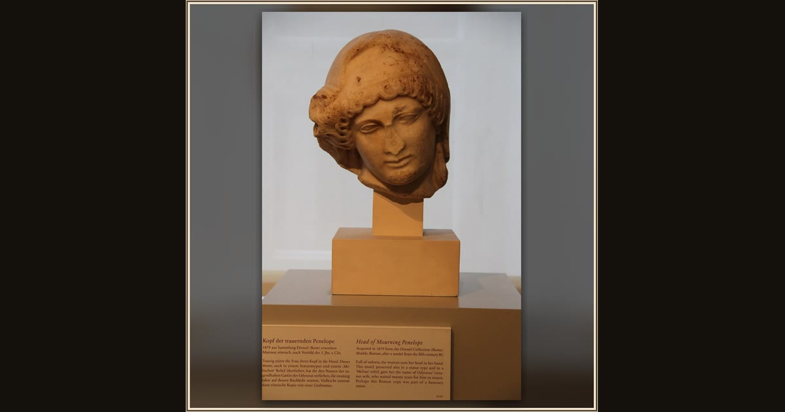

Head of Mourning Penelope
Roman sculptor, after a Greek model of the 5th century BC · Roman copy after a 5th-century BC model · Antikensammlung, Berlin · Berlin, Germany
Head bowed and thoughtful, this marble Penelope has been waiting quietly for Odysseus for nearly two thousand years. Explore its place in Book I of the Odyssey.